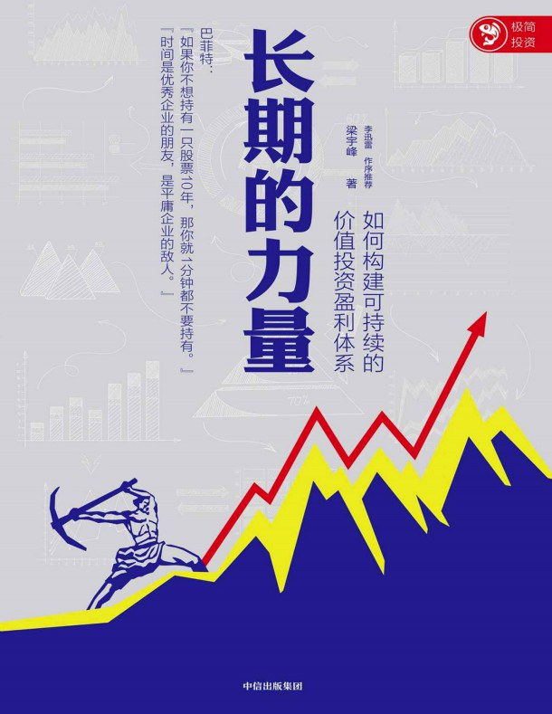

|  |
长期的力量：如何构建可持续的价值投资盈利体系 |
前言 投资最重要的事：构建你的盈利体系
中国有1亿多投资者，即便是在市场低谷的时候，也有三四千万投资者在交易。但1亿多投资者中，真正赚到钱的有多少呢？恐怕很少。大家都抱着发财的梦想进入股市，但大多数都以亏损告终，原因何在？
有人会抱怨中国股市不好，没有给投资者创造价值。很多人羡慕美国股市，说它是长期牛市，有可口可乐（CoCa Cola）这样的长线牛股，投资者能赚到钱，真的是这样吗？
我们可以来看看，中国股市和美国股市的比较。
我做过统计，我国的沪深300指数是2005年推出的，到现在差不多14年了。沪深300指数对标的是美国标普500指数（S&P 500 Index），都是蓝筹股指数。2005年到2018年年底，沪深300指数的涨幅是220%，标普500指数的涨幅是120%。数据告诉我们，中国股市表现更好，这也许颠覆了我们的认知。
如果这个统计还不够有说服力，我们再看一个事实。很多人说中国的好公司都到境外上市了，A股市场没有好公司，真的如此吗？尽管我国A股市场错失了BAT（百度、阿里巴巴、腾讯）这样的新经济龙头公司，但依然有很多超级大牛股。比如伊利股份，上市以来股价涨了238倍，泸州老窖涨了191倍，格力电器涨了140倍，恒瑞医药涨了100倍。
我统计了1992年到现在涨幅最大的10只股票，见表0-1。
| 证券代码 | 历史简称 | 当前市值（亿元） | 1992-2018年涨幅（倍） |
|---|---|---|---|
| 600887 | 伊利股份 | 1696 | 238 |
| 000568 | 泸州老窖 | 891 | 191 |
| 000538 | 云南白药 | 1114 | 173 |
| 000002 | 万科A | 2716 | 168 |
| 600519 | 贵州茅台 | 9189 | 147 |
| 000651 | 格力电器 | 2836 | 139 |
| 600276 | 恒瑞医药 | 2790 | 99 |
| 600690 | 青岛海尔 | 1174 | 53 |
| 600309 | 万华化学 | 1242 | 50 |
| 600660 | 福耀玻璃 | 645 | 46 |
这些穿越时空的长线牛股，有3个共同特点。
第一，它们都是各行各业的龙头公司。随着我国经济进入新常态，龙头公司的竞争性和稳定性越来越强。行业龙头能获得比小市值公司更确定的业绩稳定性和业绩增长性。
第二，消费股居多。这是为什么呢？因为很多行业，尤其是科技行业发展太快，容易被颠覆，周期性公司容易出现业绩巨幅波动。比如柯达，从曾经的胶片巨头到最后破产变卖；再如诺基亚，从功能手机的老大到跌落神坛。它们的没落是因为行业本身被彻底颠覆。但消费股不一样，一旦形成了品牌和护城河，它的竞争优势是可以持续很长时间的。
第三，这些公司都有很强的竞争力和很深的护城河。比如贵州茅台，就是典型的护城河很深的公司，它的品牌价值很高。再比如，格力电器的护城河是规模效应带来的成本优势，竞争对手可以生产空调，但它能达到格力那么大的规模吗？它能像格力一样拥有对上下游的议价权吗？这很难。
我再讲一个很有意思的现象，很多基金公司的基金经理都会告诉投资者，他们的产品收益率很好，长期都是盈利的且都能战胜指数。这是不是事实？是，基金确实能战胜指数，也确实能赚到钱。但基金投资者赚钱了吗？大部分基金投资者没有赚到钱。因为基金投资者和股票投资者一样，往往在估值最高的时候买入，在市场低迷的时候割肉离场。
这个现象不只中国有，美国也比比皆是。耶鲁基金会（Yale Endowment）的大卫·史文森（David Swenson）举过一个例子，他观察到1997—2002年表现最好的10只互联网基金，5年的平均年化收益率是1.5%，考虑到这些基金都经历了互联网泡沫，1.5%的年化收益率勉强能接受。但这10只基金在这5年里从投资者那里一共吸收了133亿美元本金，到2002年年底，这133亿美元只剩了38亿美元，亏损95亿美元，也就是亏损71%！为什么基金的平均年化收益率是1.5%，而其间投资者却亏损71%？答案在于，大部分基金投资者都是在市场最疯狂的时候申购基金，而基金的收益率是每个阶段收益率的和。比如2000年收益率为100%，2001年收益率为-50%，那么这两年的收益率为零。但2000年年初基金规模只有1亿美元，收益率为100%，就变成2亿美元。但到了2001年年初，因为基金业绩好，投资者蜂拥而入，新申购了8亿美元，基金规模变成了10亿美元，10亿美元亏50%就是5亿美元。所以，基金业绩是零——没有亏损，但投资者却亏了4亿美元，对应9亿美元本金来说，亏了44%。
第一部分 构建你的盈利体系
第一章 盈利体系为什么重要
投资是一个概率游戏，很多时候，投资者赚钱的原因是运气不错，但很多人会把好运气错误地当成自己的能力。比如，在股票市场，很多人喜欢炒作壳概念股。特别是2016年，随着360从美股私有化返回国内的发酵，一批壳概念股被趁机热炒，数十只像江南嘉捷这样的壳概念股受到了市场资金的热捧。但能够押中江南嘉捷的投资者，其实基本上是靠运气。更多是押错宝的投资者，他们在热炒中被套在高位，亏损累累。但押对宝的投资者不会觉得自己运气好，而是觉得自己决策能力强。可这种赚钱的投资，实际上靠运气，难以复制。
DFH是价值投资的典范，我们再来看索罗斯——全世界最具传奇色彩的金融大师之一，他的量子基金被评为最能赚钱的公司之一，过去40年的平均年化收益率达到20%。索罗斯能取得如此好的投资业绩，也是因为他有一套自己的盈利体系，而“反身性”理论是索罗斯盈利体系的核心。他认为“反身性”存在的一个最根本的因素来自人类的认知偏差，这种偏差确实存在并且是一种常态。这是索罗斯投资哲学的核心，索罗斯用它来指导投资并从市场的错误中获利，创造了量子基金的神话。例如1992年索罗斯对英镑的狙击，便充分利用了当时英格兰银行（Bank of England）对形势的错误估计而获利。
但是反过来，如果你的投资体系很糟糕，每次正确的概率很低，又在长时间内不断重复，那结果就会亏损得很严重。我们来看一个案例。申万活跃股指数是在1999年推出的，推出的时候是1000点，现在这个指数已经不再发布了，因为它已经跌了99%，只剩下10个点。申万活跃股指数走势如图1-1所示。这个指数选取每周换手率最高的前100家公司并每周调整，保证留在指数里的都是周级别持续放量最大的标的。这是一个典型的追涨策略，在放量时买入，缩量时卖出。也就是说，在18年里，这个指数持续买入最活跃的股票，但最后亏得只剩下零头，为什么？因为这个策略是一个赢面很低的策略，长期坚持这样赢面很低的策略，最终的结果可想而知。但我们很多个人投资者，却喜欢追逐热点，跟着热点炒作，几年下来，肯定是要亏损的。
市场上流传着一个故事，说腾讯有一位老员工，每月收入除开销外全部买了公司的股票，不管涨跌，坚持了7年，资产已过亿；中国远洋也有一位老员工，每月收入除开销外也全部买了公司的股票，不管涨跌，坚持了6年，最终把宝马汽车换成了自行车。
除逻辑自洽外，重要的是要符合市场规律和趋势。有些投资策略，在股市的特定阶段可能很有效，比如壳概念策略、小市值策略，但市场环境发生巨大变化之后，这些策略就变得无效，甚至非常“坑人”。我以前经常说，从2012年开始，每年1月1日，选择A股市场中总市值最小的10只股票，按照每个10%的仓位买入，一年后的1月1日，再次选择A股市场中总市值最小的10只股票，按照每个10%的仓位买入，如此坚持到2016年12月31日，5年时间这个策略的回报高达20多倍，“秒杀”任何基金经理。但这个策略在2017年和2018年，累计能让你亏损80%。为什么？市场环境发生了根本性变化，因为IPO（首次公开募股）正常化了，壳资源不再值钱，而且差公司退市的可能性大大加大，这些小市值公司就风光不再了。所以我们一定要看清楚市场趋势，及时摒弃那些已经无效的盈利体系。追涨杀跌已经被证明是大概率赔钱的方法，我们就不能再沉溺其中。炒作绩差股、题材股已经成为过去式，我们也不能再坚持。
第三，它要可持续、可复制。一个正确的盈利体系，一定是在相当长一段时间内可持续、可复制的。有些策略或者方法，虽然也能赚钱，但不能持续。比如有些专门做无风险套利的策略，风险很小时收益率很不错，但最大的问题是市场出现无风险套利的机会并不多，如果你完全依靠这种策略，很多时候你会陷入没有机会的窘境。
A股市场从2016年年底以来发生的根本性变化
A股市场从2016年开始发生了根本性的变化，这种翻天覆地的变化，总结起来是股票市场正在进行国际化、市场化和法制化的进程。大家看到这“三个化”，是不是觉得像空话？但是我要告诉大家，这“三个化”现在已经变成实实在在的政策在落实，而且正在深刻改变着A股市场的生态。
我们分别来看一看，第一个是国际化。2014年10月沪港通被推出，2016年11月深港通被推出，沪港通和深港通的推出意味着什么？内地投资者只要有50万元的资金，就可以买在香港证交所上市的来自世界各地的股票；反过来，全世界的投资者都可以通过沪股通和深股通直接购买A股市场的股票。所以，A股市场不再是一个封闭的市场。香港股票的价格比A股的便宜很多，这对A股市场是不是形成了估值压力？国际机构投资者不断进入A股市场，是不是会影响A股市场的投资理念和风格？
第二个是市场化。现在IPO整体越来越市场化，越来越顺畅。2017年，IPO数量达到300～400家，2019年上半年即便是熊市，每周也有2～3家公司IPO。这个影响会非常大，因为IPO正常化、顺畅，也就意味着小股票越来越不稀缺。原来上市所需时间长，被逼着借壳和资产重组的优质资产，现在都要经过IPO，那么借壳和资产重组会越来越难。
第三个是法制化。现在监管越来越严，特别是对各种各样的资产重组、借壳的监管更加严格。资产重组、借壳上市是A股市场投资者最喜欢炒的两个主题，但今后会越来越难实现。
市场还有一个可能的变化，就是今后退市力度将加大。这个可能性非常大，已经是市场共识。
在这“三个化”的背景下，A股市场的投资逻辑发生了翻天覆地的变化。以前A股市场的逻辑是不看基本面，不看估值，倾向于炒小盘股、重组股和题材股。在这“三个化”的背景下，投资者能很容易地买到便宜的港股、股票越来越不稀缺、重组借壳越来越难，乱炒作的基础不存在。
原有的炒作逻辑失败了，那么接下来A股市场的投资逻辑是什么呢？那就是基本面越来越重要。所以，很多原来不看基本面的盈利体系完全失效了。对很多投资者来说，老经验、老方法会让自己遭受巨大的亏损，所以需要重建自己的盈利体系。
第二章 我们需要构建什么样的盈利体系
一篇研究报告得出了一个结论：2007年到2016年的10年，股票型基金、偏股型基金、平衡混合型基金的累计收益率分别高达203%、172%、144%，同期沪深300仅上涨62%。我们自己也做过统计，得出的结论是类似的：国内基金能显著跑赢指数。
与此同时，我们还发现，在机构投资者当中，越是注重长期投资的（把股票当作投资公司的载体），收益越好。我们自己做过一个策略，跟踪合格境外机构投资者的长线持仓。这个策略表现非常好，从2010年以来取得了近500%的收益率，而同期沪深300仅有26%的收益率。
为什么在中国市场，基金能大幅跑赢指数，而在美国这样的成熟市场，基金很难跑赢指数？其实道理很简单，因为美国基本上没有个人投资者，是机构投资者主导的市场，大家都是机构，自然就很难跑赢指数。所以，美国近几十年盛行指数化投资——反正基金很难跑赢指数，我不必花高昂的管理费请基金经理来管理资金，直接买指数就可以。
除了上面两种对股票的认知，我对股票还有另外一种理解：股票是一个财富转移的工具。
什么是财富转移的工具呢？就是在市场中实现财富的再分配。在股票市场，财富的基本流向是这样的：个人投资者流向机构投资者，二级市场流向上市公司大股东。
中国的很多投资者嘴上说要分享上市公司成长的红利，心里想的是今天买进，明天涨停就卖出，也就是想从别人口袋里掏钱，但最终的结果呢？多数人做了财富转移的牺牲品，把自己辛辛苦苦赚来的钱转移给了上市公司大股东，转移给了券商和机构投资者。
巴菲特认为本金的永久性损失才是真正的风险。什么是本金的永久性损失？是你所买入股票的公司基本面恶化，股价永远回不到你买入的价格，这才是真正的风险。所以，真正的风险并非股价的波动，而是来自公司的“内在价值风险”。所以，选择安全边际高的股票，才是避免风险的最好投资方法。
初选股票的方法很多，最常见的就是从财务指标中进行初选。我举一个如何利用财务指标选股的例子。我自己非常看重净资产收益率（ROE），这是一个非常重要的指标，巴菲特也特别看重它。A股市场3000多家上市公司，平均净资产收益率在7%至8%之间。我们设定一个简单指标，选出净资产收益率连续3年大于20%的股票，就能剔除掉90%的股票，只剩下大约300只，这就能大大降低我们选择的难度。我自己还看重的几个财务指标包括现金流和估值。
可以看出作者对于价值投资的理解是有深度的，讲起来也能逻辑自洽。从作者对于历史事件信手拈来的程度，可见也是个在股市多年的老手了。
如果之前没有了解过价值投资，这本书可以作为一本及格的入门书。不过也仅是及格而已，不算出彩。对于已经入门的人，这本书新内容不多。
有些章节我是跳着看完的。书里偶尔能看到几处是体现作者自己新思想的地方，绝大部分都是对于已有价值投资思想的总结、强调、介绍。
这本书本身内容就不多，新内容就更少了，可摘抄进笔记的不多。